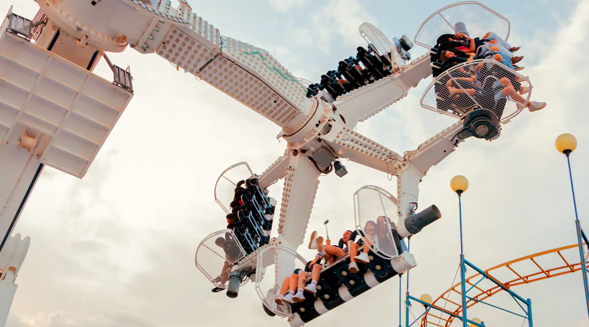
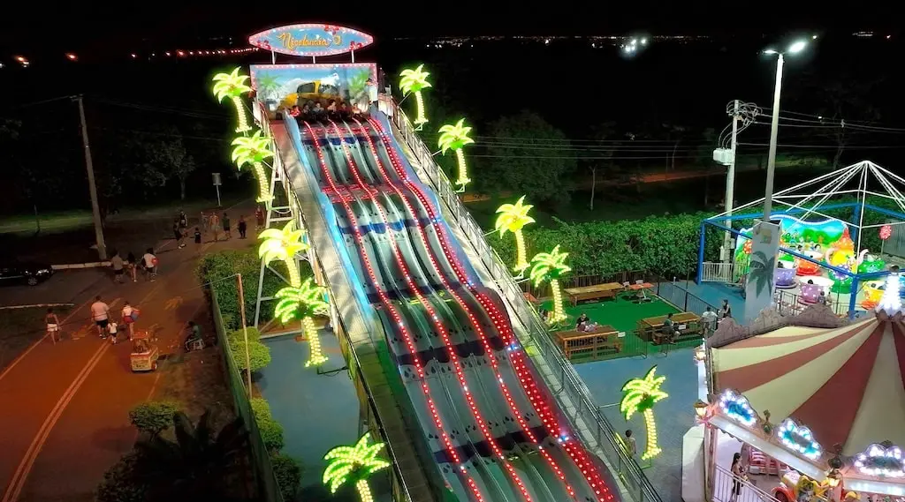

Nicolândia
A Nicolândia é um parque de diversões localizado no Parque da Cidade de Brasília e com atrações para todas as idades!
Fundada na década de 1960, mudou-se para o parque em 1978, onde se tornou uma das principais atrações da cidade.
As atrações são diversas! Veja só:

360
É uma grande gangorra giratória, somente para quem tem coragem.
É o único da américa latina!

KABUM
Nada mais que um elevador de queda livre de 30 metros.
Seu pesadelo virou realidade!

SPOOK
Este não é um trem ordinário, é um trem que explora um castelo assombrado!
Nem queira saber o que reside nele...

Colossu's Loop
Uma montanha russa que conta com muita adrenalina e um loop de
dez metros de altura!

Tobogã
Possivelmente a atração mais icônica (e perigosa) da Nicolândia, o tobogã tem 15 metros de altura!
Os participantes escorregam usando tapetes.